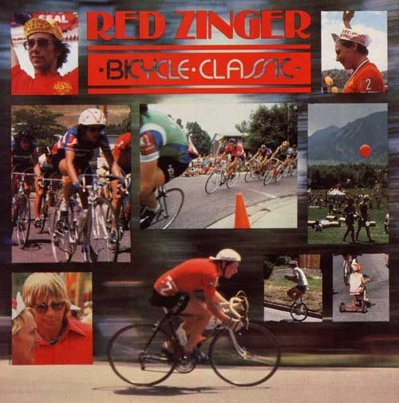

Bicycles, as most everyone knows, are fun . . . and the two-wheeled contraptions provide darn good exercise, too. In fact, biking's popularity has grown "hand in handlebar" with that of running . . . as more and more folks realize that the human body can't stay healthy if it isn't used every once in a while.
The riders who showed up in the Colorado Rockies July 8-15 for the 1978 Red Zinger Classic, however, weren't there to tighten their tummies. These people came to participate in one of the most prestigious amateur bicycle races in the world.
Over 160 entrants, both men and women, raced for a total of 19 hours over twisting roads that ranged from 6,000 to 12,500 feet above sea level. One out of every four of these participants-the percentage held true for both sexes-however, found that he or she just wasn't up to the demands made by the course . . . and had to quit before the event was over.
Those who finished the race-which was actually made up of a number of separate competitions-included representatives of the Olympic teams from ten countries, and a whole slew of talented "privateers".
And, when the bikes were set aside and the awards presented, 40,000 spectators saw George Mount of California declared the men's overall champion . . . and women's class honors given to Holland's Keetie Van enHage. Team trophies went to the Cateyes, a U.S. women's bicycle club, and to the United States national team.
Just four years ago the "Zinger" wasn't much more than an unknown event for local sportsmen. The race has come a long way since then, especially since its "success story" has taken place while a lot of traditional sports have declined in popularity. But the competition's sponsors-Celestial Seasonings and Red Seal Potato Chips-aren't satisfied. "Hey," they say, "if you thought this year was something, come see us in 1979!
|
 |
|
|